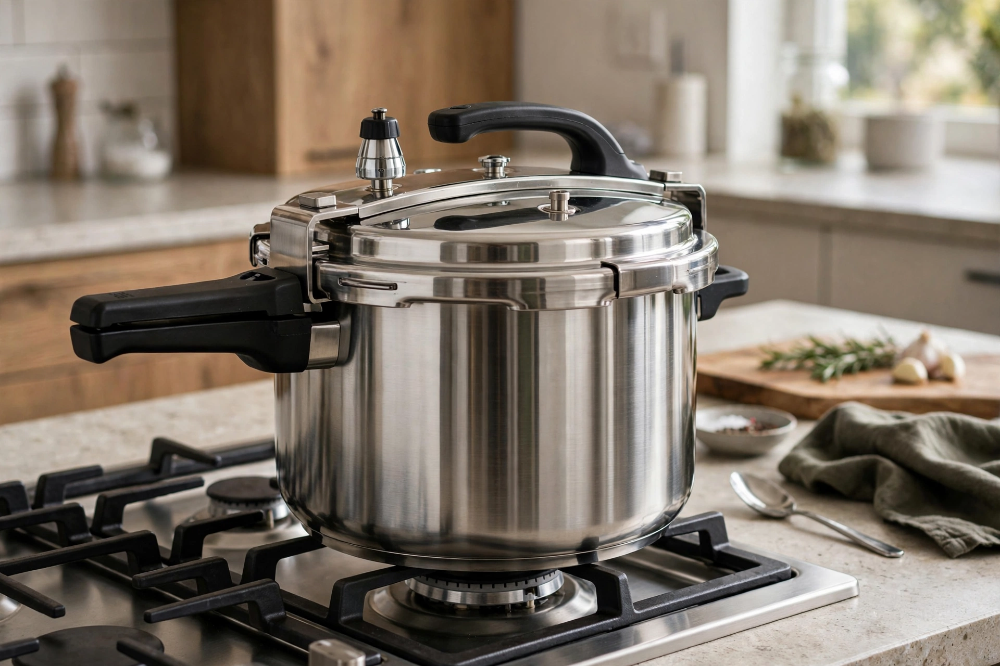

Pressure cooker
From Wikipedia, the free encyclopedia

A pressure cooker is a sealed pot in which food cooks in liquid under high-pressure steam, raising the boiling point of water from 100 °C to around 120 °C and cutting cooking times dramatically — often to a third or less. Dried beans, tough meat cuts, stocks and stews that would take hours are done in well under one. The sealed environment also retains volatile flavours and nutrients that escape in open cooking.
History
The principle was demonstrated by Denis Papin's "steam digester" of 1679, which used a safety valve of his own invention to soften bones. Domestic pressure cookers became common in the early 20th century; early models gained a fearsome reputation for explosions ("jiggle-top" valves rattling on the stove), which modern multi-valve designs have largely eliminated.
How it works
A gasket seals the lid; as water boils, trapped steam raises the pressure to typically 70–100 kPa (10–15 psi) above atmospheric. At that pressure water boils near 120 °C, and the extra heat speeds the chemical reactions of cooking — tenderising collagen, softening beans and extracting stock flavour far faster. Pressure is released either naturally as the pot cools or quickly under a tap/valve, depending on the food.
Electric models and safety
Electric countertop multi-cookers (popularised by the Instant Pot from 2010) combine pressure cooking with slow cooking, rice cooking and yoghurt-making under electronic control. Modern cookers have multiple redundant safety systems: locking lids that cannot open under pressure, pressure regulators and fail-safe vents. Cooking times must be adjusted at altitude, where ambient pressure is lower.